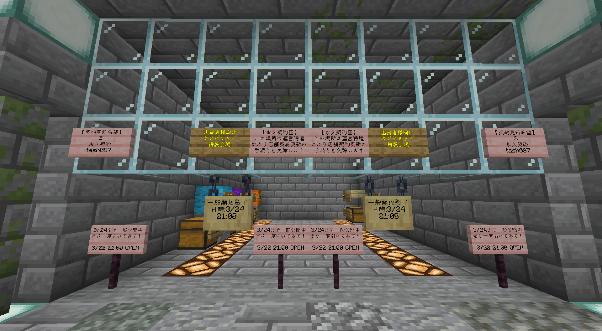

【本日 23:00まで】「出資者様向けカプセルトイ特設会場」を限定一般開放中！
箱庭クラフト住民の皆様、こんにちは。鯖主の tash087 です。
現在、普段は限られた方のみが立ち入ることのできる「出資者様向けカプセルトイ特設会場」を、期間限定で一般開放しております！

▲会場内に設置された案内看板
⏳ 一般開放は本日 23:00 まで！
この貴重な機会をお見逃しなく。ぜひ一度、特設会場の雰囲気を味わいに訪れてみてください。
- 開放期限： 2026年3月24日（火） 23:00まで
- 場所： ガチャ商店街 2番地 特設エリア
🔍 会場のポイント
この特設エリアは、運営特権によってシステムの自動更新をスキップしている特殊な区画です。会場内では、実際に出資者の方々が利用されている専用のカプセルトイなどもご覧いただけます。
普段は入ることのできない特別なエリアを体験できるチャンスです。開放時間が終了する前に、ぜひ足を運んでみてください！
残り時間はあとわずか！皆様のご来場をお待ちしております。